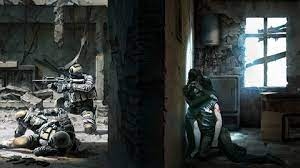

Comme dit précedemment, This war of mine est en jeu publié en 2014.
C'est un jeu de survie inspiré du siège de Sarajevo dans lequel nous jouons un petit groupe de survivant tentant de survivre à une guerre civile
Durant la journée, le groupe que l'on protège reste dans la maison et fit des travaux à l'intérieur et la nuit, on peut:
Le but du jeu est de survivre jusqu'à ce que l'armée de l'ONU rentre dans la ville et nous libère
Mais beaucoup d'obstacle se mettrons sur votre route...
pour poursuivre la découverte de ce jeu, c'est par ici